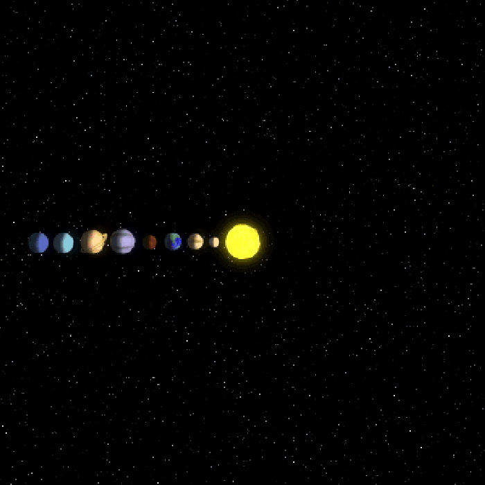
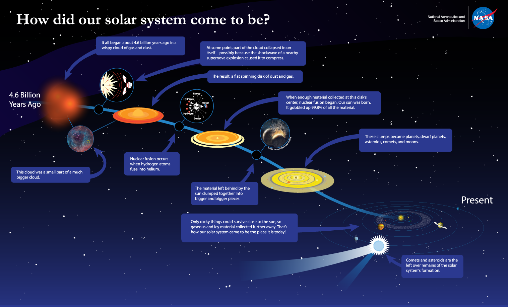
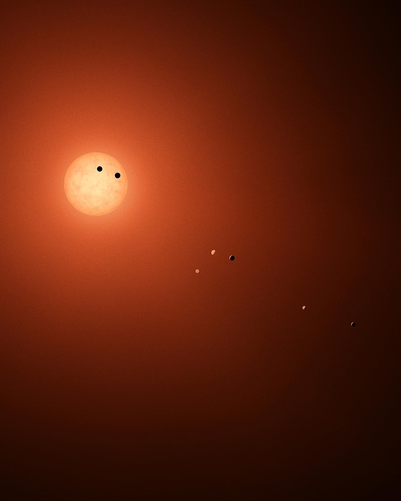
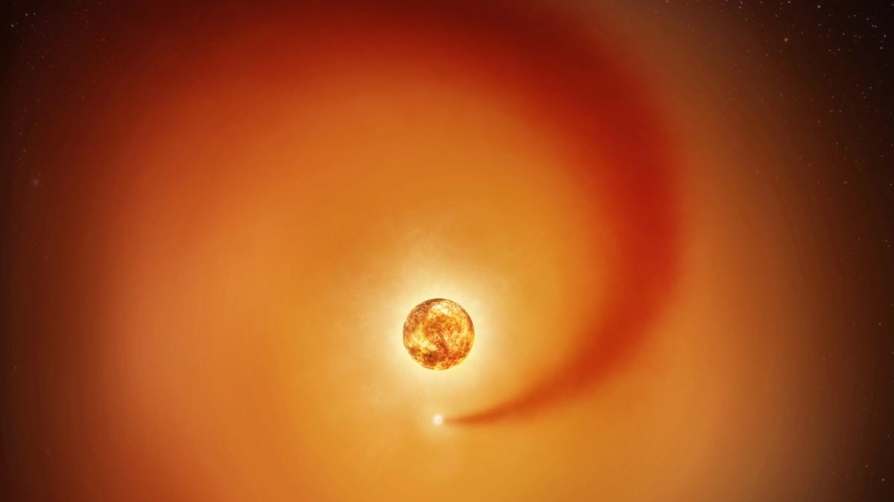
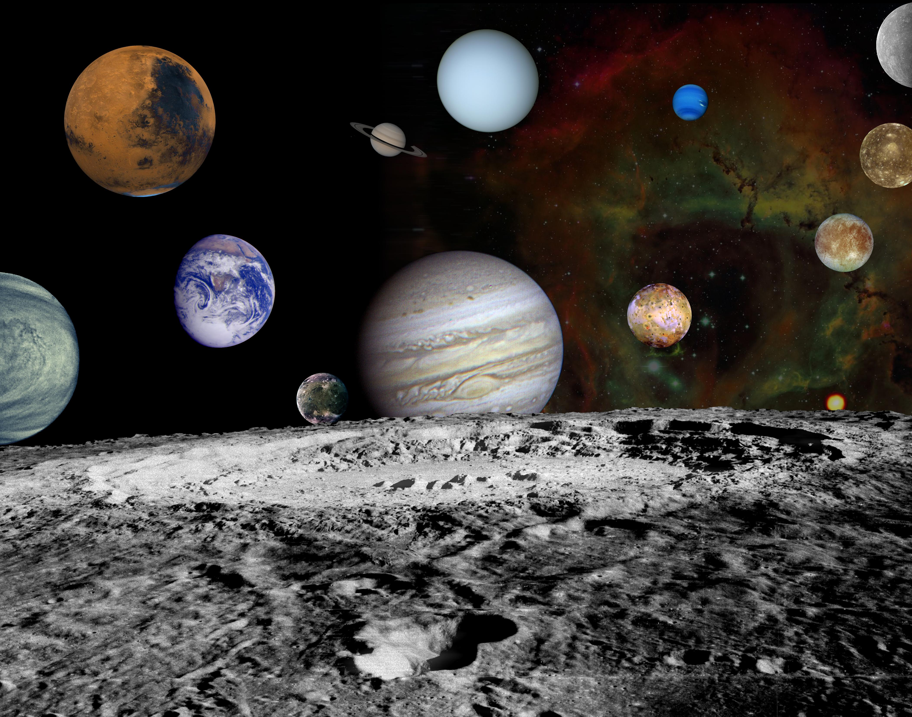

PLANETARY SYSTEMS

A planetary system is a body system that includes planets and other orbiting bodies. Most planetary systems form in cold molecular clouds: a collapsing core creates a young star, and the leftover material settles into a rotating disk where planets can grow. Over time, planetary systems are shaped by gravity, radiation, and impacts—sometimes rearranging orbits through migration and resonances.

How planetary systems form
Planetary systems begin in giant molecular clouds—vast, cold regions of gas and dust. Small fluctuations grow, and parts of the cloud collapse under their own gravity. As a core collapses, it spins faster, flattening into a disk. A protostar forms at the center and heats up; once nuclear fusion ignites in its core, a new star is born.
The disk around the young star (the protoplanetary disk) supplies the raw material for planets. Dust grains stick together, building larger and larger bodies. Some become planets; others remain as belts of asteroids or icy objects. In the outer regions, comets can survive and later be scattered inward.

Star system are different from planetary system
Star system is the broader term: it means one or more stars bound by gravity (single, binary, or multiple stars) and anything bound to them. A planetary system is specifically a star system that contains planets (and usually smaller bodies like asteroids, comets, and debris belts).
Star systems or sollar systems have then more than one star.
What a planetary system contains
- One or more stars: single stars (like the Sun) or multiple stars (binary/triple systems).
- Planets: rocky inner planets and/or gas and ice giants farther out.
- Small bodies: asteroids, comets, dwarf planets, and moons.
- Disks & debris: leftover dust belts, rings, and scattered icy reservoirs.
- Gravity as the organizer: orbits, resonances, and stable zones are all set by gravity.
Most stars in the Milky Way likely host planets. Many systems we detect are very different from our own, showing “hot Jupiters” close to their star, compact multi-planet systems, and planets on tilted or eccentric orbits.

Main planetary system types
Planetary systems also come in many forms.
- Single-star planetary systems
- Binary-star planetary systems
- Multiple-star planetary systems
- Compact multi-planet systems
- Debris-disk systems
There are billions of planetary systems in our galaxy alone, and surveys keep revealing how diverse they are. The most common hosts are small, cool red dwarf stars—many of which appear to have planets.



History and evolution
Early in a system’s life, strong radiation and stellar winds from the young star clear away leftover gas. Over tens to hundreds of millions of years, collisions between planetesimals can still be common, building moons and shaping asteroid belts. Over billions of years, systems can remain stable—or be rearranged by slow gravitational interactions, resonances, and occasional close flybys from passing stars.
In systems with multiple stars, gravity can be more complex. Planets may orbit one star (S-type orbits) or orbit around a close pair (circumbinary orbits). Stable planetary orbits depend on the stars’ spacing and the planet’s distance.
Orbital direction
In many planetary systems, most planets orbit in the same direction and in nearly the same plane. That’s because they formed from a single rotating protoplanetary disk. Our Solar System is a classic example: the planets mostly orbit the Sun in the same direction as the Sun’s rotation, and their orbits are close to one common plane.
But nature isn’t always tidy. Some systems contain planets with tilted or even retrograde orbits (orbiting in the opposite direction compared to the star’s rotation or compared to other planets). This can happen after strong gravitational interactions—planet–planet scattering, close stellar flybys in the birth cluster, or the long-term pull of a distant companion star that slowly changes orbital tilt.
Planets around black holes
There are also exotic cases where objects can orbit a black hole. In principle, stable orbits are possible—gravity still follows the same rules—but the environment can be harsh (strong radiation, energetic particles, and violent events near the black hole). Some candidates for “planet-like” bodies have been discussed around pulsars and in extreme systems, but they are rare and difficult to confirm.

Our Solar System
Our Solar System formed about 4.6 billion years ago from a collapsing molecular cloud. The Sun contains nearly all the system’s mass, while the planets and smaller bodies orbit in a mostly flat plane—the relic of the original disk.
- Inner region: rocky planets (Mercury, Venus, Earth, Mars) and the asteroid belt.
- Outer region: gas giants and ice giants (Jupiter, Saturn, Uranus, Neptune).
- Icy reservoirs: Kuiper Belt beyond Neptune and a distant Oort Cloud (hypothesized) that feeds long-period comets.

Nearest planetary system
The nearest known planetary system to the Sun is in the Alpha Centauri neighborhood, about 4.37 light-years away. The system is a triple system: Alpha Centauri A and B form a close binary, and Proxima Centauri is a smaller red dwarf farther out. At least one planet (Proxima b) is known around Proxima Centauri.